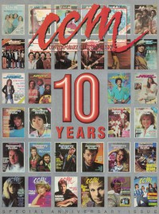

CMnexus
:
Contemporary Christian culture, music, and media.
Magazines
Profiles
Dove Awards
cmnexus.org
CM
nexus
→
Profiles
→
Writers: D
→
Devlin Donaldson
Devlin Donaldson
< -- Prev
ious
Next-- >
1
2
3
4
5
Writing credits listing
Win 1987
in
Harvest Rock Syndicate
2.4
"The Very Best of Early Christian Rock"
best of list covering up to 1980, reviews each item
Jan 1988
in
CCM
10.7
Jessy Dixon
-
Sold Out
Feb 1988
in
CCM
10.8
Nancy Honeytree
-
Every Single Day
Deborah Peters
-
Freedom
Mar 1988
in
CCM
10.9
Sheldon Gooch
-
I'm Free
various artists -
California Metal
Apr 1988
in
CCM
10.10
Stevie & The Saints
-
Metal Blue
May 1988
in
CCM
10.11
Barren Cross
-
Atomic Arena

Jun 1988
in
CCM
10.12
Celebrating Our 10th Year:
Barry McGuire
Celebrating Our 10th Year:
Billy Ray Hearn
Jul 1988
in
CCM
11.1
Stryper
-
In God We Trust
Mark Farner
-
Just Another Injustice
Sum 1988
in
YouthWorker
5.2
"Servant: Maturing of a Veteran Music Ministry"
Servant
Aug 1988
in
CCM
11.2
Bloodgood
-
Rock in a Hard Place
Sep 1988
in
CCM
11.3
"Leading The Way"
Amy Grant
various artists -
Heavy Righteous Metal
Bride
-
Live to Die
Saint
-
Too Late for Living
Whitecross
-
Love on the Line
Rosanna's Raiders
-
Calling Down Fire
Oct 1988
in
CCM
11.4
Contagious
-
Free Indeed
Force Three
-
Warrior of Light
Reneé García
-
A Different World
Dec 1988
in
CCM
11.6
"Connie Scott's Heartfelt Christmas"
Connie Scott
Kerry Livgren A.D.
-
Prime Mover
Eddie DeGarmo
-
Feels Good to Be Forgiven
Jan 1989
in
CCM
11.7
Keith Green
-
The Ministry Years, Volume 2
Feb 1989
in
CCM
11.8
Whatever Happened To ...?:
Servant
Larry Howard
-
Shout!
Apr 1989
in
CCM
11.10
Christian Musician:
Peter York
Jun 1989
in
CCM
11.12
Benny Hester
-
Perfect
Oct 1989
in
CCM
12.4
The Swirling Eddies
-
Outdoor Elvis
Dec 1989
in
CCM
12.6
"Lighting Their World"
NewSong
Mar 1990
in
CCM
12.9
Rich Mullins
-
Never Picture Perfect
Apr 1990
in
CCM
12.10
Mom and Pop Winans
-
Mom and Pop Winans
Spr 1990
in
Harvest Rock Syndicate
5.1
Kate Bush
-
The Sensual World
"Harvest Rock Syndicate's Best of the '80s: A Decade of Christian Rock"
best of list, albums reviewed
Oct 1990
in
CCM
13.4
The Call
-
Red Moon
Mar 1991
in
Harvest Rock Syndicate
6.2
Randy Matthews
-
The Edge of Flight
Sep 1991
in
CCM
14.3
Faces:
Novella
Apr 1992
in
Religious Broadcasting
24.4
"Waking The Church to World Needs"
missions-music connection --
Randy Stonehill
,
Steve Camp
,
Steve Geyer
Fall 1993
in
YouthWorker
10.2
David Bowie
-
Black Tie White Noise
Depeche Mode
-
Songs of Faith and Devotion
World Party
-
Bang!
Midnight Oil
-
Earth and Sun and Moon
Win 1994
in
YouthWorker
10.3
U2
-
Zooropa
Billy Idol
-
Cyberpunk
The Hooters
-
Out of Body
The Waterboys
-
Dream Harder
Hothouse Flowers
-
Songs From the Rain
< -- Prev
ious
Next-- >
1
2
3
4
5
CMnexus
(noun)
The magazine index
of modern music
and Christianity
© 2011 CMnexus. Last updated August 2025.
Contact:
Rants and other correspondence to:
editor -AT- cmnexus
-DØT- org
About